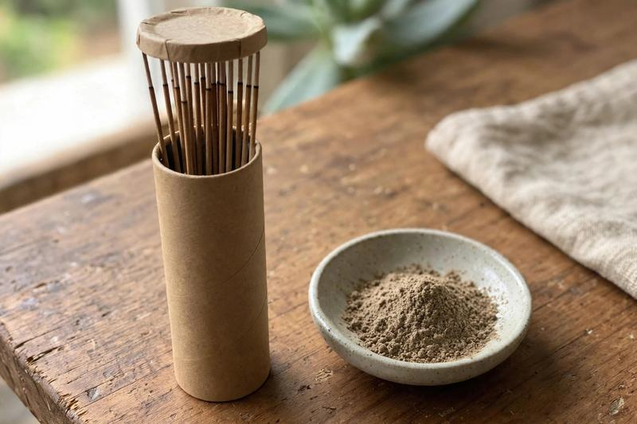

线香和香粉受潮之后，点不着、香味发闷，严重的会发霉。南方梅雨季节尤其要注意，密封容器里可以放一小包干燥剂。
线香受潮了可以阴干：放在阴凉通风处，干透了再收起来。香粉受潮结块，阴干后轻轻捏散，还能用。
线香和香粉的表面积大，更容易吸收周围的味道。保存的时候要密封，远离香水、樟脑、咖啡这些气味重的东西。
不同产区、不同配方的线香香粉要分开存放，混放时间长了香韵会互相影响。
线香要直立存放，不要平放压着。平放时间长了容易折断、变形。专用的线香筒、香盒都可以，密封性好就行。
线香很细，容易断。取用的时候轻拿轻放，不要一把抓。断掉的线香碎段可以收集起来，用电熏炉熏着用，别浪费。
香粉要放在密封罐里，盖子拧紧。香粉颗粒细，受潮结块、串味都比线香更快。
取用香粉的时候用干净干燥的勺子，不要用湿手、湿勺子。每次取完立刻盖好，减少接触空气的时间。
线香的香味和配料直接相关：纯沉香粉做的线香，香味干净；加了其他香料、粘粉的线香，香味会受配料影响。买之前看配料表，配料越简单，香味越纯。
香粉也一样：纯沉香粉和混合香粉是两回事。商家应该说得清配料，说不清的先别买。配料表是判断线香香粉品质的重要依据。
线香和香粉没有固定的保质期，保存得当可以放很久。判断标准是香味：闻着香味还在、没有霉味、没有串味，就能用。
香味明显变淡、发霉、串味严重的，就不要用了。保存得当，才能放得久。
| 保存要点 | 线香 | 香粉 |
|---|---|---|
| 防潮 | 密封容器，梅雨季放干燥剂 | 密封罐，梅雨季放干燥剂 |
| 防串味 | 密封，远离气味重的东西 | 密封，远离气味重的东西 |
| 存放方式 | 直立放，不要平放压着 | 密封罐，干燥勺子取用 |
| 受潮处理 | 阴干后还能用 | 阴干后捏散还能用 |